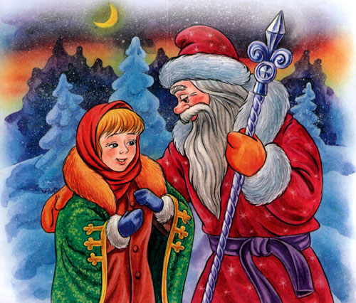
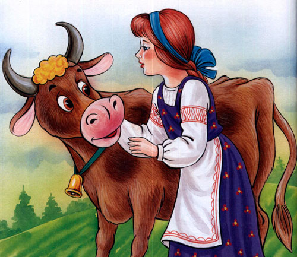
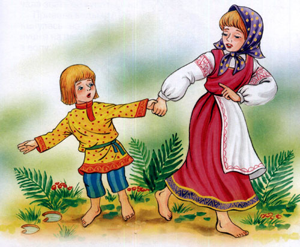
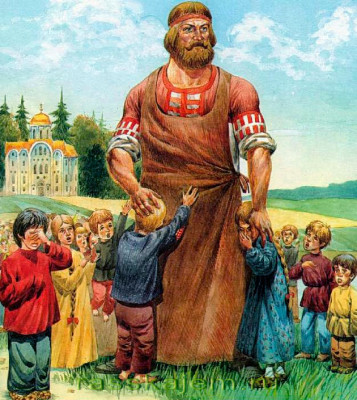
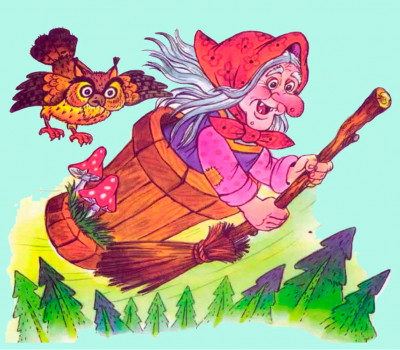

Взрослые рассказывали сказки детям еще в древние времена, рассказывают или читают их и в наши дни. С тех пор изменились места действий, герои, сюжеты, однако, суть самого процесса осталась неизменной.Зачем нужны сказки? Зачем нужны сказки, какую роль они играют в жизни ребенка и почему принято их читать детям с самых малых лет? Для многих ответ очевиден – это занятие хорошее развлечение для ребенка. Но в действительности, необходимость сказок куда больше. Такие фантастические рассказы позволяют преподнести малышам представление о том, как создан мир.
Они начинают знакомство деток с человеческими отношениями, дают начальные понятия о добре и зле, подлости и благородстве, дружбе и предательстве. Учат, как вести себя в разнообразных ситуациях – когда на пути возникают препятствия, когда тебя обидели, когда кто-то просит помочь.Серьезные нравоучения родителей малышей утомляют очень быстро и редко достигают своей цели. В то же время воспитание дошкольников сказкой позволяет преподнести нужную информацию в наиболее доступной, легкой для детского понимания форме. Именно поэтому познавательные, фантастические интересные деткам рассказы, можно считать мощнейшим инструментом их обучения.

У мачехи была падчерица да родная дочка; родная что ни сделает, за все ее гладят по головке да
приговаривают: «Умница!» А падчерица как ни угождает - ничем не угодит, все не так, все худо; а надо
правду сказать, девочка была золото, в хороших руках она бы как сыр в масле купалась, а у мачехи
каждый день слезами умывалась. Что делать? Ветер хоть пошумит, да затихнет, а старая баба расходится
- не скоро уймется, все будет придумывать да зубы чесать. И придумала мачеха падчерицу со двора
согнать:
- Вези, вези, старик, ее куда хочешь, чтобы мои глаза ее не видали, чтобы мои уши о ней не слыхали;
да не вози к родным в теплую хату, а во чисто поле на трескун-мороз!
Старик затужил, заплакал; однако посадил дочку на сани, хотел прикрыть попонкой - и то побоялся;
повез бездомную во чисто поле, свалил на сугроб, перекрестил, а сам поскорее домой, чтоб глаза не
видали дочерниной смерти.
Осталась бедненькая одна в поле, трясется и тихонько молитву творит. Приходит Мороз, попрыгивает,
поскакивает, на красную девушку поглядывает:
- Девушка, девушка, я Мороз красный нос!
- Добро пожаловать, Мороз. Знать, бог тебя принес по мою душу грешную.
Мороз хотел ее тукнуть и заморозить; но полюбились ему ее умные речи, жаль стало! Бросил он ей шубу.
Оделась она в шубу, поджала ножки, сидит.
Опять пришел Мороз красный нос, попрыгивает, поскакивает, на красную девушку поглядывает:
- Девушка, девушка, я Мороз красный нос!
- Добро пожаловать, Мороз. Знать, бог тебя принес по мою душу грешную.
Мороз пришел совсем не по душу, он принес красной девушке сундук высокий да тяжелый, полный всякого
приданого. Уселась она в шубке на сундучке, такая веселенькая, такая хорошенькая!
Опять пришел Мороз красный нос, попрыгивает, поскакивает, на красную девушку поглядывает. Она его
приветила, а он ей подарил платье, шитое и серебром и золотом. Надела она его и стала такая
красавица, такая нарядница! Сидит и песенки попевает.
А мачеха по ней поминки справляет; напекла блинов.
- Ступай, муж, вези хоронить свою дочь. Старик поехал. А собачка под столом:
- Тяв, тяв! Старикову дочь в злате, в серебре везут, а старухину женихи не берут!
- Молчи, дура! На блин, скажи: старухину дочь женихи возьмут, а стариковой одни косточки
привезут!
Собачка съела блин да опять:
- Тяв, тяв! Старикову дочь в злате, в серебре везут, а старухину женихи не берут!
Старуха и блины давала, и била ее, а собачка все свое:
- Старикову дочь в злате, в серебре везут, а старухину женихи не возьмут!
Скрипнули ворота, растворилися двери, несут сундук высокий, тяжелый, идет падчерица - панья паньей
сияет! Мачеха глянула - и руки врозь!
- Старик, старик, запрягай других лошадей, вези мою дочь поскорей! Посади на то же поле, на то же
место.
Повез старик на то же поле, посадил на то же место. Пришел и Мороз красный нос, поглядел на свою
гостью, попрыгал-поскакал, а хороших речей не дождался; рассердился, хватил ее и убил.
- Старик, ступай, мою дочь привези, лихих коней запряги, да саней не повали, да сундук не оброни! А
собачка под столом:
- Тяв, тяв! Старикову дочь женихи возьмут, а старухиной в мешке косточки везут!
- Не ври! На пирог, скажи: старухину в злате, в серебре везут!
Растворились ворота, старуха выбежала встретить дочь, да вместо ее обняла холодное тело. Заплакала,
заголосила, да поздно!

Вы знаете, что есть на свете люди и хорошие, есть и похуже, есть и такие, которые бога не боятся,
своего брата не стыдятся: к таким-то и попала Крошечка-Хаврошечка. Осталась она сиротой маленькой;
взяли ее эти люди, выкормили и на свет божий не пустили, над работою каждый день занудили, заморили;
она и подает, и прибирает, и за всех и за все отвечает.
А были у хозяйки три дочери большие. Старшая звалась Одноглазка, средняя — Двуглазка, а меньшая —
Триглазка; но они только и знали у ворот сидеть, на улицу глядеть, а Крошечка-Хаврошечка на них
работала, их обшивала, для них и пряла и ткала, а слова доброго никогда не слыхала. Вот то-то и
больно — ткнуть да толкнуть есть кому, а приветить да приохотить нет никого!
Выйдет, бывало, Крошечка-Хаврошечка в поле, обнимет свою рябую корову, ляжет к ней на шейку и
рассказывает, как ей тяжко жить-поживать:
— Коровушка-матушка! Меня бьют, журят, хлеба не дают, плакать не велят. К завтрему дали пять пудов
напрясть, наткать, побелить, в трубы покатать.
А коровушка ей в ответ:
— Красная девица! Влезь ко мне в одно ушко, а в другое вылезь — все будет сработано.
Так и сбывалось. Вылезет красная девица из ушка — все готово: и наткано, и побелено, и покатано.
Отнесет к мачехе; та поглядит, покряхтит, спрячет в сундук, а ей еще больше работы задаст.
Хаврошечка опять придет к коровушке, в одно ушко влезет, в другое вылезет и готовенькое возьмет
принесет.
Дивится старуха, зовет Одноглазку:
— Дочь моя хорошая, дочь моя пригожая! Доглядись, кто сироте помогает: и ткет, и прядет, и в трубы
катает?
Пошла с сиротой Одноглазка в лес, пошла с нею в поле; забыла матушкино приказанье, распеклась на
солнышке, разлеглась на травушке; а Хаврошечка приговаривает:
— Спи, глазок, спи, глазок!
Глазок заснул; пока Одноглазка спала, коровушка и наткала и побелила. Ничего мачеха не дозналась,
послала Двуглазку.
Эта тоже на солнышке распеклась и на травушке разлеглась, матернино приказанье забыла и глазки
смежила; а Хаврошечка баюкает;
— Спи, глазок, спи, другой!
Коровушка наткала, побелила, в трубы покатала; а Двуглазка все еще спала.
Старуха рассердилась, на третий день послала Триглазку, а сироте еще больше работы дала. И
Триглазка, как ее старшие сестры, попрыгала-попрыгала и на травушку пала. Хаврошечка поет:
— Спи, глазок, спи, другой! — а об третьем забыла.
Два глаза заснули, а Третий глядит и все видит, все — как красная девица в одно ушко влезла, в
другое вылезла и готовые холсты подобрала. Все, что видела, Триглазка матери рассказала; старуха
обрадовалась, на другой же день пришла к мужу:
— Режь рябую корову! Старик так, сяк:
— Что ты, жена, в уме ли? Корова молодая, хорошая!
— Режь, да и только!
Наточил ножик…
Побежала Хаврошечка к коровушке:
— Коровушка-матушка! Тебя хотят резать.
— А ты, красная девица, не ешь моего мяса; косточки мои собери, в платочек завяжи, в саду их рассади
и никогда меня не забывай, каждое утро водою их поливай.
Хаврошечка все сделала, что коровушка завещала: голодом голодала, мяса ее в рот не брала, косточки
каждый день в саду поливала, и выросла из них яблонька, да какая — боже мой! Яблочки на ней висят
наливные, листвицы шумят золотые, веточки гнутся серебряные; кто ни едет мимо — останавливается, кто
проходит близко — тот заглядывается.
Случилось раз — девушки гуляли по саду; на ту пору ехал по полю барин — богатый, кудреватый,
молоденький. Увидел яблочки, затрогал девушек:
— Девицы-красавицы! — говорит он. — Которая из вас мне яблочко поднесет, та за меня замуж
пойдет.
И бросились три сестры одна перед другой к яблоньке. А яблочки-то висели низко, под руками были, а
то вдруг поднялись высоко-высоко, далеко над головами стали. Сестры хотели их сбить — листья глаза
засыпают, хотели сорвать — сучья косы расплетают; как ни бились, ни метались — ручки изодрали, а
достать не могли.
Подошла Хаврошечка, и веточки приклонились, и яблочки опустились. Барин на ней женился, и стала она
в добре поживать, лиха не знавать.

Жили-были старик да старуха, у них была дочка Алёнушка да сынок Иванушка.
Старик со старухой умерли. Остались Алёнушка да Иванушка одни-одинешеньки.
Пошла Алёнушка на работу и братца с собой взяла. Идут они по дальнему пути, по широкому полю, и
захотелось Иванушке пить.
— Сестрица Алёнушка, я пить хочу!
— Подожди, братец, дойдем до колодца.
Шли-шли, — солнце высоко, колодец далеко, жар донимает, пот выступает. Стоит коровье копытце полно
водицы.
— Сестрица Алёнушка, хлебну я из копытца!
— Не пей, братец, телёночком станешь!
Братец послушался, пошли дальше. Солнце высоко, колодец далеко, жар донимает, пот выступает. Стоит
лошадиное копытце полно водицы.
— Сестрица Алёнушка, напьюсь я из копытца!
— Не пей, братец, жеребёночком станешь!
Вздохнул Иванушка, опять пошли дальше. Идут, идут, — солнце высоко, колодец далеко, жар донимает,
пот выступает. Стоит козье копытце полно водицы.
Иванушка говорит:
— Сестрица Алёнушка, мочи нет: напьюсь я из копытца!
— Не пей, братец, козлёночком станешь!
Не послушался Иванушка и напился из козьего копытца. Напился и стал козлёночком…
Зовет Алёнушка братца, а вместо Иванушки бежит за ней беленький козлёночек.
Залилась Алёнушка слезами, села на стожок — плачет, а козлёночек возле неё скачет.
В ту пору ехал мимо купец:
— О чём, красная девица, плачешь?
Рассказала ему Алёнушка про свою беду. Купец ей и говорит:
— Поди за меня замуж. Я тебя наряжу в златосеребро, и козлёночек будет жить с нами.
Алёнушка подумала, подумала и пошла за купца замуж.
Стали они жить-поживать, и козлёночек с ними живет, ест-пьет с Алёнушкой из одной чашки.
Один раз купца не было дома. Откуда не возьмись приходит ведьма: стала под Алёнушкино окошко и такто
ласково начала звать её купаться на реку.
Привела ведьма Алёнушку на реку. Кинулась на неё, привязала Алёнушке на шею камень и бросила её в
воду.
А сама оборотилась Алёнушкой, нарядилась в её платье и пришла в её хоромы. Никто ведьму не
распознал. Купец вернулся — и тот не распознал.
Одному козлёночку все было ведомо.
Повесил он голову, не пьет, не ест. Утром и вечером ходит по бережку около воды и зовёт:
— Алёнушка, сестрица моя!
Выплынь, выплынь на бережок…
Узнала об этом ведьма и стала просить мужа зарежь да зарежь козлёнка.
Купцу жалко было козлёночка, привык он к нему А ведьма так пристает, так упрашивает, — делать
нечего, купец согласился:
— Ну, зарежь его…
Велела ведьма разложить костры высокие, греть котлы чугунные, точить ножи булатные.
Козлёночек проведал, что ему недолго жить, и говорит названому отцу:
— Перед смертью пусти меня на речку сходить, водицы испить, кишочки прополоскать.
— Ну, сходи.
Побежал козлёночек на речку, стал на берегу и жалобнёхонько закричал:
— Алёнушка, сестрица моя!
Выплынь, выплынь на бережок.
Костры горят высокие,
Котлы кипят чугунные,
Ножи точат булатные,
Хотят меня зарезати!
Алёнушка из реки ему отвечает:
— Ах, братец мой Иванушка!
Тяжёл камень на дно тянет,
Шелкова трава ноги спутала,
Желты пески на груди легли.
А ведьма ищет козлёночка, не может найти и посылает слугу:
— Пойди найди козлёнка, приведи его ко мне.
Пошёл слуга на реку и видит: по берегу бегает козлёночек и жалобнёшенько зовет:
— Алёнушка, сестрица моя!
Выплынь, выплынь на бережок.
Костры горят высокие,
Котлы кипят чугунные,
Ножи точат булатные,
Хотят меня зарезати!
А из реки ему отвечают:
— Ах, братец мой Иванушка!
Тяжел камень на дно тянет,
Шелкова трава ноги спутала,
Желты пески на груди легли.
Слуга побежал домой и рассказал купцу про то, что слышал на речке. Собрали народ, пошли на реку,
закинули сети шелковые и вытащили Алёнушку на берег. Сняли камень с шеи, окунули её в ключевую воду,
одели ее в нарядное платье. Алёнушка ожила и стала краше, чем была.
А козлёночек от радости три раза перекинулся через голову и обернулся мальчиком Иванушкой.
Ведьму привязали к лошадиному хвосту, и пустили в чистое поле.

В старые годы появился невдалеке от Киева страшный змей. Много народа из Киева потаскал в свою
берлогу, потаскал и поел. Утащил змей и царскую дочь, но не съел ее, а крепко-накрепко запер в своей
берлоге. Увязалась за царевной из дому маленькая собачонка. Как улетит змей на промысел, царевна
напишет записочку к отцу, к матери, привяжет записочку собачонке на шею и пошлет ее домой. Собачонка
записочку отнесет и ответ принесет.
Вот раз царь и царица пишут царевне: узнай-де от змея, кто его сильней. Стала царевна от змея
допытываться и допыталась.
— Есть, — говорит змей, — в Киеве Никита Кожемяка — тот меня сильней.
Как ушел змей на промысел, царевна и написала к отцу, к матери записочку: есть-де в Киеве Никита
Кожемяка, он один сильнее змея. Пошлите Никиту меня из неволи выручить.
Сыскал царь Никиту и сам с царицею пошел его просить выручить их дочку из тяжелой неволи. В ту пору
мял Кожемяка разом двенадцать воловьих кож. Как увидел Никита царя — испугался: руки у Никиты
задрожали, и разорвал он разом все двенадцать кож. Рассердился тут Никита, что его испугали и ему
убытку наделали, и, сколько ни упрашивали его царь и царица пойти выручить царевну, не пошел.
Вот и придумал царь с царицей собрать пять тысяч малолетних сирот — осиротил их лютый змей, — и
послали их просить Кожемяку освободить всю русскую землю от великой беды. Сжалился Кожемяка на
сиротские слезы, сам прослезился. Взял он триста пудов пеньки, насмолил ее смолою, весь пенькою
обмотался и пошел.
Подходит Никита к змеиной берлоге, а змей заперся, бревнами завалился и к нему не выходит.
— Выходи лучше на чистое поле, а не то я всю твою берлогу размечу! — сказал Кожемяка и стал уже
бревна руками разбрасывать.
Видит змей беду неминучую, некуда ему от Никиты спрятаться, вышел в чистое поле.
Долго ли, коротко ли они билися, только Никита повалил змея на землю и хотел его душить. Стал тут
змей молить Никиту:
— Не бей меня, Никитушка, до смерти! Сильнее нас с тобой никого на свете нет. Разделим весь свет
поровну: ты будешь владеть в одной половине, а я — в другой.
— Хорошо, — сказал Никита. — Надо же прежде межу проложить, чтобы потом спору промеж нас не
было.
Сделал Никита соху в триста пудов, запряг в нее змея и стал от Киева межу прокладывать, борозду
пропахивать; глубиной та борозда две сажени с четвертью. Провел Никита борозду от Киева до самого
Черного моря и говорит змею:
— Землю мы разделили — теперь давай море делить, чтобы о воде промеж нас спору не вышло.
Стали воду делить — вогнал Никита змея в Черное море, да там его и утопил.
Сделавши святое дело, воротился Никита в Киев, стал опять кожи мять, не взял за свой труд ничего.
Царевна же воротилась к отцу, к матери.
Борозда Никитина, говорят, и теперь кое-где по степи видна: стоит она валом сажени на две высотою.
Кругом мужички пашут, а борозды не распахивают: оставляют ее на память о Никите Кожемяке.

Жили-были муж с женой, и была у них дочка. Заболела жена и умерла. Погоревал-погоревал мужик да и
женился на другой.
Невзлюбила злая баба девочку, била ее, ругала, только и думала, как бы совсем извести, погубить.
Вот раз уехал отец куда-то, а мачеха и говорит девочке:
— Поди к моей сестре, твоей тетке, попроси у нее иголку да нитку — тебе рубашку сшить.
А тетка эта была баба-яга, костяная нога. Не посмела девочка отказаться, пошла, да прежде зашла к
своей родной тетке.
— Здравствуй, тетушка!
— Здравствуй, родимая! Зачем пришла?
— Послала меня мачеха к своей сестре попросить иголку и нитку — хочет мне рубашку сшить.
— Хорошо, племянница, что ты прежде ко мне зашла, — говорит тетка. — Вот тебе ленточка, масло,
хлебец да мяса кусок. Будет там тебя березка в глаза стегать — ты ее ленточкой перевяжи; будут
ворота скрипеть да хлопать, тебя удерживать — ты подлей им под пяточки маслица; будут тебя собаки
рвать — ты им хлебца брось; будет тебе кот глаза драть — ты ему мясца дай.
Поблагодарила девочка свою тетку и пошла.
Шла она, шла и пришла в лес. Стоит в лесу за высоким тыном избушка на курьих ножках, на бараньих
рожках, а в избушке сидит баба-яга, костяная нога — холст ткет.
— Здравствуй, тетушка! — говорит девочка.
— Здравствуй, племянница! — говорит баба-яга. — Что тебе надобно?
— Меня мачеха послала попросить у тебя иголочку и ниточку — мне рубашку сшить.
— Хорошо, племяннушка, дам тебе иголочку да ниточку, а ты садись покуда поработай!
А баба-яга вышла из избушки и говорит своей работнице:
— Я сейчас спать лягу, а ты ступай, истопи баню и вымой племянницу. Да смотри, хорошенько вымой:
проснусь — съем ее!
Девочка услыхала эти слова — сидит ни жива, ни мертва. Как ушла баба-яга, она стала просить
работницу:
— Родимая моя! Ты не столько дрова в печи поджигай, сколько водой заливай, а воду решетом носи! — И
ей подарила платочек.
Работница баню топит, а баба-яга проснулась, подошла к окошку и спрашивает:
— Ткешь ли ты, племяннушка, ткешь ли, милая?
— Тку, тетушка, тку, милая!
Баба-яга опять спать легла, а девочка дала коту мясца и спрашивает:
— Котик-братик, научи, как мне убежать отсюда.
Кот говорит:
— Вон на столе лежит полотенце да гребешок, возьми их и беги поскорее: не то баба-яга съест! Будет
за тобой гнаться баба-яга — ты приложи ухо к земле. Как услышишь, что она близко, брось гребешок —
вырастет густой дремучий лес. Пока она будет сквозь лес продираться, ты далеко убежишь. А опять
услышишь погоню — брось полотенце: разольется широкая да глубокая река.
— Спасибо тебе, котик-братик! — говорит девочка.
Поблагодарила она кота, взяла полотенце и гребешок и побежала.
Бросились на нее собаки, хотели ее рвать, кусать, — она им хлеба дала. Собаки ее и пропустили.
Ворота заскрипели, хотели было захлопнуться — а девочка подлила им под пяточки маслица. Они ее и
пропустили. Березка зашумела, хотела ей глаза выстегать, — девочка ее ленточкой перевязала. Березка
ее и пропустила. Выбежала девочка и побежала что было мочи. Бежит и не оглядывается.
А кот тем временем сел у окна и принялся ткать. Не столько ткет, сколько путает!
Проснулась баба-яга и спрашивает:
— Ткешь ли, племяннушка, ткешь ли, милая?
А кот ей в ответ:
— Тку, тетка, тку, милая!
Бросилась баба-яга в избушку и видит — девочки нету, а кот сидит, ткет.
Принялась баба-яга бить да ругать кота:
— Ах ты, старый плут! Ах ты, злодей! Зачем выпустил девчонку? Почему глаза ей не выдрал? Почему лицо
не поцарапал?..
А кот ей в ответ:
— Я тебе столько лет служу, ты мне косточки обглоданной не бросила, а она мне мясца дала!
Выбежала баба-яга из избушки, накинулась на собак:
— Почему девчонку не рвали, почему не кусали?..
Собаки ей говорят:
— Мы тебе столько лет служим, ты нам горелой корочки не бросила, а она нам хлебца дала!
Подбежала баба-яга к воротам:
— Почему не скрипели, почему не хлопали? Зачем девчонку со двора выпустили?..
Ворота говорят:
— Мы тебе столько лет служим, ты нам и водицы под пяточки не подлила, а она нам маслица не
пожалела!
Подскочила баба-яга к березке:
— Почему девчонке глаза не выстегала?
Березка ей отвечает:
— Я тебе столько лет служу, ты меня ниточкой не перевязала, а она мне ленточку подарила!
Стала баба-яга ругать работницу:
— Что же ты, такая-сякая, меня не разбудила, не позвала? Почему ее выпустила?..
Работница говорит:
— Я тебе столько лет служу — никогда слова доброго от тебя не слыхала, а она платочек мне подарила,
хорошо да ласково со мной разговаривала!
Покричала баба-яга, пошумела, потом села в ступу и помчалась в погоню.
Пестом погоняет, помелом след заметает…
А девочка бежала-бежала, остановилась, приложила ухо к земле и слышит: земля дрожит, трясется —
баба-яга гонится, и уж совсем близко…
Достала девочка гребень и бросила через правое плечо. Вырос тут лес, дремучий да высокий: корни у
деревьев на три сажени под землю уходят, вершины облака подпирают.
Примчалась баба-яга, стала грызть да ломать лес. Она грызет да ломает, а девочка дальше бежит.
Много ли, мало ли времени прошло, приложила девочка ухо к земле и слышит: земля дрожит, трясется —
баба-яга гонится, уж совсем близко.
Взяла девочка полотенце и бросила через правое плечо.
В тот же миг разлилась река — широкая-преширокая, глубокая-преглубокая!
Подскочила баба-яга к реке, от злости зубами заскрипела — не может через реку перебраться.
Воротилась она домой, собрала своих быков и погнала к реке:
— Пейте, мои быки! Выпейте всю реку до дна!
Стали быки пить, а вода в реке не убывает.
Рассердилась баба-яга, легла на берег, сама стала воду пить. Пила, пила, пила, пила, до тех пор
пила, пока не лопнула.
А девочка тем временем знай бежит да бежит.
Вечером вернулся домой отец и спрашивает у жены:
— А где же моя дочка?
Баба говорит:
— Она к тетушке пошла — иголочку да ниточку попросить, да вот задержалась что-то.
Забеспокоился отец, хотел было идти дочку искать, а дочка домой прибежала, запыхалась, отдышаться не
может.
— Где ты была, дочка? — спрашивает отец.
— Ах, батюшка! — отвечает девочка. — Меня мачеха посылала к своей сестре, а сестра ее — баба-яга,
костяная нога. Она меня съесть хотела. Насилу я от нее убежала!
Как узнал все это отец, рассердился он на злую бабу и выгнал ее грязным помелом вон из дому. И стал
он жить вдвоем с дочкой, дружно да хорошо.
Здесь и сказке конец.
Республика Беларусь, 220030, г. Минск, ул. Сталетова,20 +375 (17) 273 28 45


Gmail: nastia.gil@mail.ru
{kind=link}
{kind=link}
{kind=link}
{kind=link}
{kind=link}